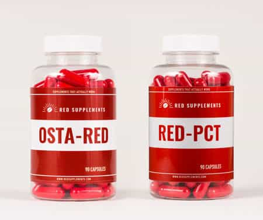

Sponsored Article is ROK's official account that publishes sponsored articles from advertisers. If you are interested hiring a sponsored article for your site, product, or service, visit our advertising page.


The following article is sponsored by Red Supplements
There are so many “steroid alternative” products that have hit the market over the years that when something seems too good to be true, it almost always is, and it’s actually usually complete and utter crap.
However, since the conception of SARMs, there has been promise invigorated back into the supplement industry. This one WILL NOT disappoint you like all the others will, and I’m going to tell you why.
Ostarine is a selective androgen receptor modulator (SARM for short) which has been studied and proven to significantly improve lean body mass and physical function.
It also exhibits increases in tendon strength, ligament health, bone density and collagen turn-over.
Ostarine is a specific type of SARM that has proven to be very effective at building lean muscle tissue, burning fat, and increasing strength as well as endurance past the point your natural genetics would allow you otherwise.
It is important to note, that while Ostarine isn’t a steroid, it still exerts anabolic effects in muscle and bone formidable to the results one could expect from a mild dose of certain less harsh steroids.
Ostarine isn’t as strong as most steroids are. HOWEVER, I think it certainly does deliver muscle gains and body recomposition benefits comparable to modest doses of certain “milder” steroids.
I would assert that mild doses of Equipoise, Primobolan, or low doses of Anavar provide similar results to a recommended dose of Ostarine.
Realistic expectations must be made when you start using this supplement though.
It won’t pack on 15-20 pounds of lean muscle on you in a few months; however, you definitely can expect LEAN gains upwards of 5-10 pounds in my opinion with a decent diet and training regimen.
5-10 pounds of muscle is still a HUGE gain, and the results will certainly be even more dramatic for an individual who has never touched performance enhancing supplements in their lives before.
Ostarine binds to the androgen receptor via the same process anabolic steroids do, but have a selective process in which they work on the receptors in your body (hence the category of supplements being named: SELECTIVE androgen receptor modulators).
This selectivity allows Ostarine to deliver some of the same anabolic activity normal steroids would, but without the nasty androgenic related side effects that natural athletes want to avoid like hair loss, testicle shrinkage, testosterone shutdown, infertility, bitch tits (gyno), etc.
Most steroids convert to DHT or Estrogen, and when the body is subjected to higher than normal levels of those two hormones you have the increased chance of a huge myriad of unwanted side effects.
Those side effects will be non-existent during the use of Ostarine.
A lot of direct parallels can be made between certain steroids and Ostarine not only because of increase in muscle mass it causes, but the increase in nitrogen retention as well as the improvement of joint mobility and ligament strength it causes.
What you can expect from Ostarine are respectable and easy to maintain gains in lean muscle mass, strength and endurance with little to no side effects.
The anabolic attributes of Ostarine make it the perfect addition to any bulk or cut phase. Regardless of your physique goals, Ostarine has benefit in any training regimen.
For example, if you are cutting in a calorie deficit Ostarine will retain a much greater amount of muscle (if not all of it) than you would be able to hold onto naturally.
Alternatively, if you are trying to bulk up in a calorie surplus to gain muscle or strength, Ostarine will bring you far more lean muscle gains and strength gains than you would otherwise be able to achieve naturally.
Also, if you are simply trying to lose a bit of fat and gain a bit of muscle, Ostarine works great as a body recomposition supplement as well.
This is Derek, he set a goal for his Ostarine cycle to cut as much body fat as possible or at least get into the sub 9-10% body fat range without losing any muscle.
The results speak for themselves:
“I lost no strength and I didn’t lose any lean muscle tissue, and I was able to get to around 8-9% body fat with only 3 cardio sessions per week at about 25-30 minutes a piece at my most involved portion of the cut which took 6 weeks.” – Derek
“I actually gained a few reps on a few of my compound lifts during that Ostarine cycle so it is arguable that I gained a bit of lean muscle despite being in a calorie deficit.” – Derek
Diminishing returns seem to start at around the 37.5 mg per day mark.
We recommend that you use 25-37.5 mg per day for 6 weeks to achieve optimal results with the least chance of side effects.
If you choose to do another Ostarine cycle, we recommend that you complete your PCT phase and then take as many weeks off as you were on Ostarine for.
This will ensure your body has fully recovered and that your androgen receptors are fully refreshed so your body is primed to deliver great results again during your next cycle.
In other words, the gains from Ostarine will eventually plateau if you don’t take time off from it by cycling it on and off.
Ostarine has a very convenient half-life of 23.8 hours, so timing your dosing schedule and popping pills a certain amount of hours apart several times per day is totally unnecessary.
Once per day dosing is the most effective way to ensure you get the biggest peak in your blood plasma serum levels from Ostarine, so take your daily dose in its’ entirety all at once at the same time each day. Easy to remember and simple.
I just take mine right when I wake up before breakfast.
Those who choose to try higher than average dosing protocols may find their testosterone levels slightly suppressed in rare instances.
Don’t fret if this happens, it is very temporary and if you follow the recommended dosing instructions you will very likely not even encounter this side effect.
To offset the slight chance that you experience a bit of testosterone suppression, it is highly recommended that you complete a PCT (post-cycle therapy) after your Ostarine cycle finishes. This means literally the day after your last Ostarine dose, you begin your PCT.
We highly recommend you use this PCT supplement linked below for your PCT phase.

Red Supplement’s “RED-PCT” product contains a potent natural testosterone booster and a potent aromatase inhibitor (lowers your estrogen levels back to a healthy range if they are elevated).
Red-PCT will expedite your recovery process to bring your testosterone levels back up to where they naturally should be and were previous to your Ostarine cycle.
Even if you don’t experience any testosterone suppression on Ostarine, it is still highly recommended to complete the PCT to solidify and retain your gains from the Ostarine cycle you just ran.
It’s better to be safe than sorry, so I recommend that everybody who does an Ostarine cycle do a full PCT to ensure their test levels have recovered to homeostasis.
You want your Ostarine and PCT products to be of high purity and to be consistent batch to batch from whichever supplier you are using.
Be Smart! You are ingesting a foreign substance into your body, it should go without saying that you want to order from a reputable company who you can trust and won’t put fillers or other garbage in your product and not meet their label claims.
The Red Supplements Staff not only has high quality products that each come with a purity report for each order, but they are legitimately friendly and prompt in regards to their customer service, and have knowledgeable representatives who are always there to answer any and all questions you may have regarding their products.